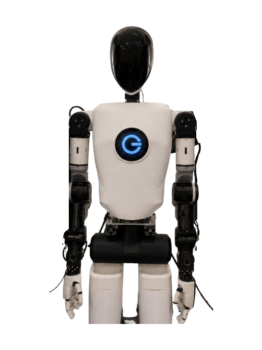

GEORGE
A humanoid robot from Czechia, announced 2026.
Sources retrieved: 16 October 2026 (C) · 9 November 2026 (B) · 10 November 2026 (A)
- Intended use, per the manufacturer
- Not stated
- Indicative price
- Not stated

Manufacturer's own photo.
Specifications
3 of 33 stated 30 not stated
30 fields hidden
How to read the figuresShow guideClose
- not statedNo source
- noStated by a source
- 0Reported as zero
- ASource
- A*Source with a caveat (select it)
- CERecords only what the manufacturer states regarding CE marking.
Select a source marker for source details and notes.
Physical1/14 disclosed
Power0/5 disclosed
Sensing and autonomy1/6 disclosed
Payload and expansion1/3 disclosed
Commercial0/1 disclosed
Compliance & certifications0/4 disclosed
Against the field
Each strip holds every robot of this type in the guide that states the figure, one bar per group of values. Further right means a larger figure, not a better robot. A taller bar means more robots in that group.
Height
approximately 180cmapproximately 70.9inOur conversion from 180 cm. The manufacturer does not state an imperial figure itself, so the conversion has no source of its own.
150 humanoids state a height
7 state a higher figure, 129 a lower one. 11 more state exactly the same figure. 2 state only a bound (≥ or ≤) and are not ranked. Neo1 lies beyond the end of the axis and is drawn at its edge as an open bar.
Notes
The producer calls GEORGE a humanoid robot engineered in Zlín, Czech Republic, for manufacturing and logistics work.
The producer says the same arms, sensors and GeorgeOS can be mounted on a fixed pedestal, on a scissor lift or on legs.
The producer's news page dates GEORGE's first public appearance, at CzechCrunch Future, to 22 April 2026.
The producer's press kit shows a plastic prototype of GEORGE in its lab in Zlín.
ITBiz.cz, reporting from the Brno engineering fair in October 2026, quotes the head of mechatronic development as saying the team avoided legs and put the robot on a pedestal (translated from the Czech).
ITBiz.cz reports that the team has also developed a version with legs for further research and development (translated from the Czech).
ITBiz.cz quotes the company as saying one arm can carry 6 kg continuously and up to 12 kg for 20 percent of working time (translated from the Czech). That is an arm-specific figure, not a figure for what the whole robot can carry.
Sources
One line per source, not per figure: a source has one retrieval date.
- Aradiozurnal.rozhlas.cz/lidsky-trup-a-misto-nohou-kola-humanoidni-robot-george-ma-nahradit-lidi-pri-9649451Secondary. Retrieved 10 November 2026
- Brobotgeorge.com/georgeMain source. Retrieved 9 November 2026
- Crobotgeorge.com/georgeRetrieved 16 October 2026